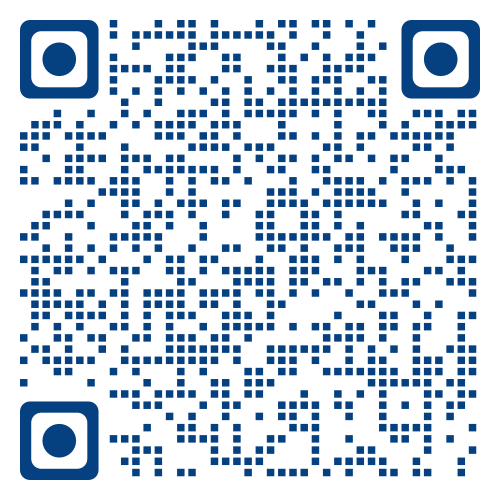

AI 助我学
北京皮村同心友好空间，2024 年 3 月 - 6 月

链接：https://yishuai.github.io/talk/ai-study/study.html
简介
皮村同心友好空间是服务于打工人及其子女的空间。该空间为打工人及其子女提供了很好的社区支持空间，包括游乐、教育、创业。
本课程为空间的打工人及其家属、子女，提供最先进的、具有国际水准的 AI 教育，支持她们的成长、学习和创业。
目标与方法
通过和 AI 交互，孩子们能够：
内容
-
AI 魔法学校
- 对话机器人：学习辅导、大学、职业顾问、辩论伙伴、角色扮演
- 内容：信息文本、学术内容
- 创意：书籍、歌曲、小品、说唱、笑话
- 想法：研究助理、扩展想法、句子开头、示例、真实世界连接
- 学习：计划、测验、语言学习
- 支持：翻译、总结、步骤、解释、概念理解、社交故事
- STEM：编程、数学分析、数据收集
- 写作：反馈、修辞、校对、重写、邮件、便条
-
帮我记
- 记内容：记忆卡、故事、歌曲、提炼大段文本，方便记忆
- 记单词：上下文、新闻、场景、故事、起源、同义反义
-
帮我读
- 简要复述、划重点
- 差异化讲解和布置作业、适合学生最近发展区（ZPD）
- 阅读材料推荐
- 文章阅读助手：内容总结、观点提炼、数据和逻辑的批判性分析
-
帮解释
- 定义、示例、信息图
- 与真实世界链接：有趣的科学事实或故事
- 创建活动、教程、课程计划、仿真
- 成为专家
- 基本解释：示例、类比
- 帮助教师生成解释 AI：了解学生情况、易犯错误、关键点，生成有吸引力的开头、示例、图表、从简单到复杂的解释
- 解释来龙去脉：起源、应用、内容、不足、发展
- 费曼风格解释：科学、逻辑、简洁
- 形象化的解释
-
帮辅导
- 辅导的本质：互动，帮助学生主动知识构建
- 辅导中的老师：提问、提示、纠正、建议、合作解决问题
- 辅导中的学生：积极解决问题、主动构建知识
- 可汗学院的 Khanmigo
- 成为专家
- 提问式辅导
- 通用概念辅导：了解学生情况、解释，让学生提问、提问学生、确认理解
- 设计 AI 导师：目标、任务、学生情况、约束、测试、资源推荐、作业布置
- 作业辅导
-
陪我练
- 练习的作用
- 提供练习：快速练习、游戏式系列练习
- 在线模拟和虚拟实验
-
给反馈
- 持续的、量身定制的反馈很重要
- 组成：目标、反馈、计划和调整
- 有效的反馈：及时、平衡、可操作、目标导向、个性化
- 示例：关于写作的反馈
- 成为专家
- 目标反馈：询问目标、学生情况，然后反馈，要求修订，并就修订继续反馈
- 打分反馈：根据打分标准进行反馈
- 多个 AI 合作提供反馈：风险投资 Pitch
Vanderbilt 大学 Coursera 课程
- 使用 ChatGPT 进行创新教学，课程网页，支持创新教学和个性化教育
- Generative AI for University Leaders，课程网页，大学管理者
参考材料
- Ethan Mollick, One Useful Thing, Trying to understand the implications of AI for work, education, and life. Website
- Ethan Mollick, More Useful Things: AI Resources, Book, Prompt Library, Website
- Ethan Mollick, Lilach Mollick, Assigning Ai: Seven Approaches For Students With Prompts, Wharton School, June 11, 2023, Arxiv PDF
- 兰勇等，用生成式人工智能激活学习——国外生成式人工智能教学案例解读，中小学信息技术教育 2024-03-04 微信公众号
- Eduaide.Ai，人工智能驱动的平台，帮助教育工作者创建课程计划、教学资源和评估，网站
- Kristen DiCerbo, Khan 学习科学负责人，Khan 博客系列，博客和媒体，视频，论文，自动评估，Khanmigo